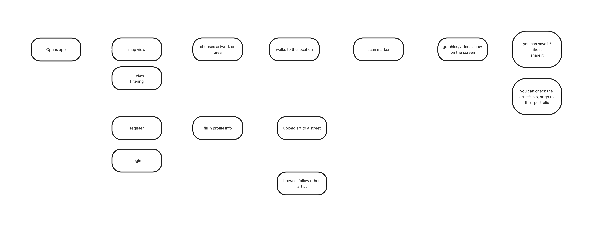
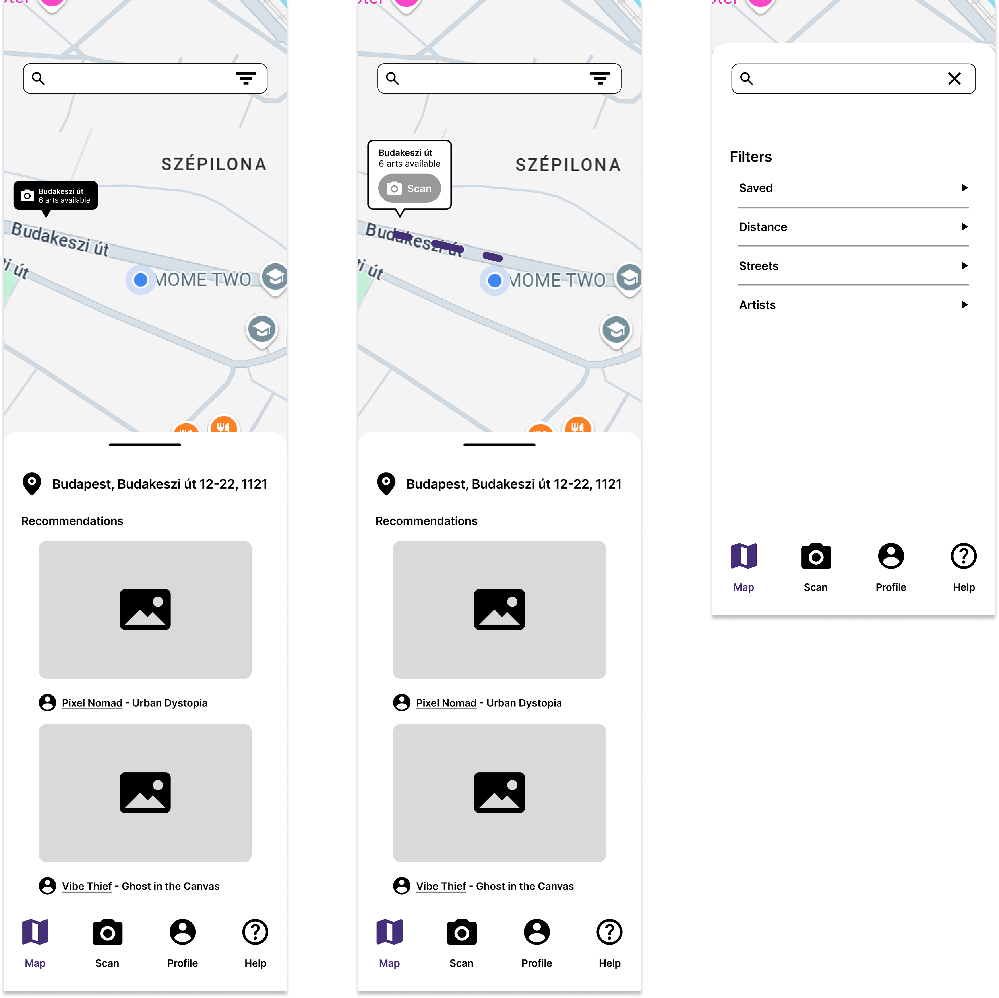

The Project
The class that this project was made for was an introduction to creative coding and computer vision using modern web based technologies. By the development of machine learning and deep neural networks, our machines now understand drawings, objects, human poses, gestures, and many other semantically meaningful components, that are related to vision.
During the course, we were experimenting with some basic methods on how to use these advances. The technology that we got to know and then used for our project is augmented reality and image tracking. We wanted to design something, that uses the facilities of our environment to show people the opportunities of this digital space.
The Concept
Our idea was to give an opportunity for street artist to express themselves and share their work with people, but without vandalizing the buildings, so we decided to design an AR based app, where they can project the digitalized version of their art on buildings. Therefore, we could also provide a new creative space for artists, where they could fulfill their potential and reach more people to showcase their work.
The Procress
Userflow
Low/Mid-Fidelity Wireframing
Artworks
To demonstrate the collaborative aspect of our concept, and also have something special for the showcase of our project, we asked some of the students in the campus to create the artworks for our application. As Moholy-Nagy is a well-respected art and design university, it wasn't a challange to fing some talented students, who helped us with their amazing graphical artworks.

Markers
To integrate augmented reality into our application, we had to create markers. Markers are real objects that our camera recognizes and uses as a digital layer. We looked for objects that consist of simple elements but are difficult to confuse. That's why we decided to use street signs in Budapest. We photographed signs displaying street names and house numbers, retouched them to make them high-contrast and correct perspective errors, and then uploaded them to MindAR to create markers from them. We integrated these markers into our code. We created a GitHub page for this project, which can be opened from the Figma prototype, so the concept actually works with real-life street signs.